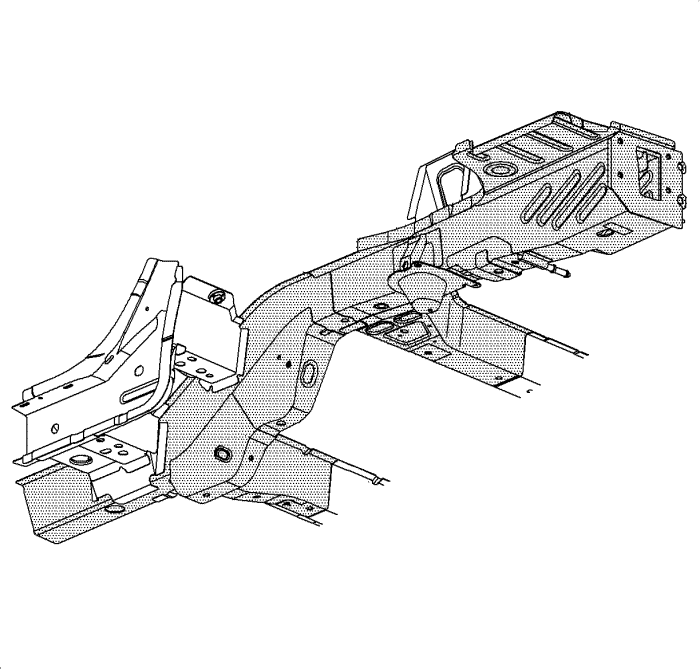

Sustitución del carril trasero
Procedimiento de desmontaje
Advertencia: Consulte Advertencia en relación con el equipo autorizado para la reparación de choques en la sección Prólogo.

- Desactivar el sistema de la sujeción inflable suplementaria (SIR). Consultar Deshabilitación y habilitación del sistema de airbag (SIR). .
- Desconecte el cable de batería negativo. Consultar Desconexión y conexión del cable negativo de la batería .
- Retirar todas las piezas y componentes relacionados.
- Repare todo el daño posible conforme a las especificaciones de fábrica. Consultar Dimensiones: carrocería : C105/Carrocería corta → C100/Carrocería larga .
- Anote la ubicación y desmonte los selladores y los materiales anticorrosión del área de reparaciones según sea necesario. Consultar Tratamiento y reparación anticorrosión .
Nota: No dañar ninguno de los revestimientos interiores o refuerzos.
- Localice y elimine con un taladro todas las soldaduras de fábrica. Anote el número y la ubicación de las soldaduras para la instalación de la parte inferior del carril trasero.
- Retire el carril trasero dañado.
Procedimiento de montaje
Nota: si no puede determinarse la ubicación de los orificios para soldadura de tapón originales, establezca una separación entre los orificios para soldadura de tapón de 40 mm (1 1/2 pulg.).
Algunos paneles pueden tener un adhesivo de soldadura estructural. Es necesario reemplazar el adhesivo de soldadura por una soldadura de puntos adicional entre cada punto de soldadura de fábrica.
- Perfore orificios de soldadura de tapón de 8 mm (5/16 pulg.) en la pieza de repuesto según sea necesario en los lugares marcados del revestimiento original.
- Preparar todas las superficies de conexión necesarias.
- Aplique revestimiento de soldadura 3M N/P 05916 o equivalente a todas las superficies de conexión.
- Coloque la parte inferior del carril trasero en el vehículo utilizando para ello equipo de medida tridimensional. Fije con abrazaderas la parte inferior del carril trasero en su posición.
- Realice la soldadura de tapón de manera adecuada.
- Limpie y prepare todas las superficies soldadas.
- Aplicar los selladores y los materiales anticorrosión para el área de reparaciones según sea necesario. Consultar Tratamiento y reparación anticorrosión .
- Pinte la zona de reparación. Consultar Sistemas de pintado de capa base/capa transparente .
- Instalar todas las piezas y componentes relacionados.
- Conectar el cable de batería negativo. Consultar Desconexión y conexión del cable negativo de la batería .
- Activar el sistema SIR. Consultar Deshabilitación y habilitación del sistema de airbag (SIR). .
| © Copyright Chevrolet Europe. All rights reserved |